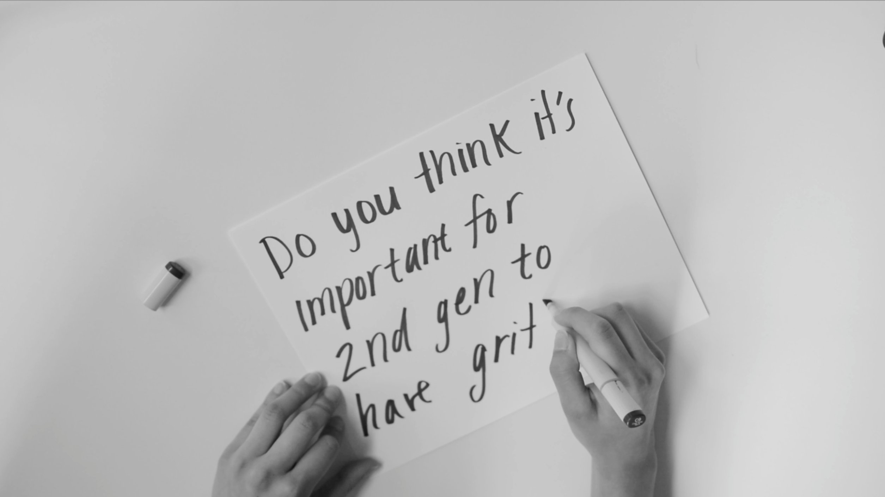
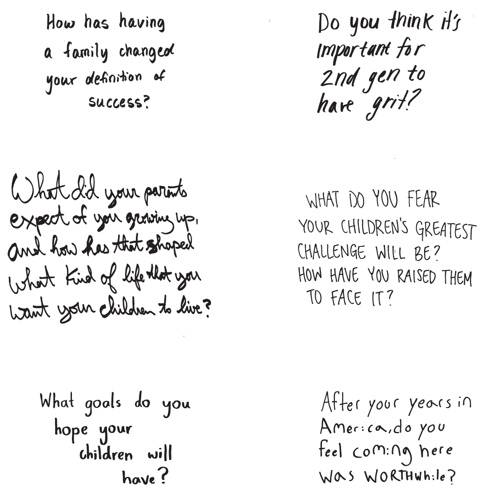
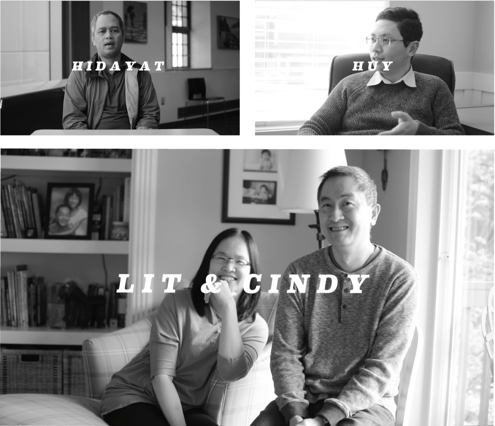
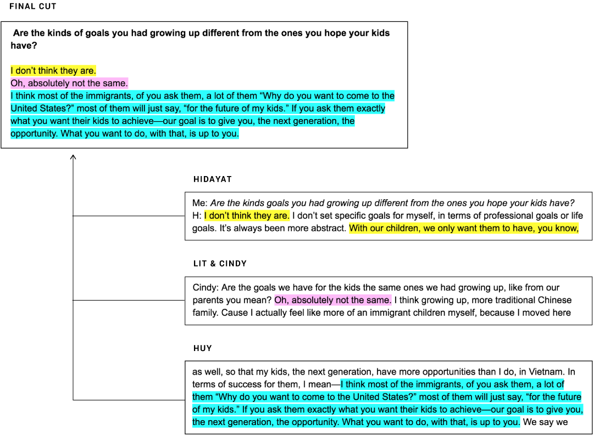
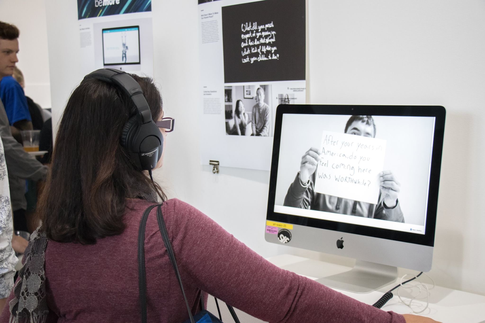

My senior year capstone project was a video project exploring the concept of “success” as it spans the generation gap between first- and second- generation immigrants.
What I did Art direction, interviewing, filming & editing, microsite design

It's a common cliche for parents to say things like “Oh, I had to deal with this when I was your age; you have it so easy in comparison.” I realized that this sentiment takes on a different dimension when your parents are first-generation immigrants, who not only adopted to a new language and culture, but also gave me a more comfortable berth than they ever had from which to begin in life. As I approached graduation, I found myself increasingly asking: With the privilege we have as second-generation American immigrants, what does it mean to be successful? Through casual conversation, I found I wasn’t alone in asking these questions. I asked a few friends to each come up with a question they wished they understood better about success and being a second-generation immigrant.
Second-generation immigrant question-askers.

The questions.
the process
I gathered six questions from my second-generation immigrant friends, and then brought them to four first-generation immigrant parents, filming their responses to each question.
Next, I sat down with each of my second-generation participants and asked them to explain their question and why they chose it. In the same session, I had them watch their question being answered.
To make the conversations accessible to a wide population of first- and second-generation immigrants, I produced a series of videos and an accompanying microsite, which you can view at questionsandanswers.webflow.io.

First-generation immigrant parents.

I transcribed each interview in Google docs and selected portions that I felt best represented the diversity of perspectives.

what i'm taking into future Work
Letting people be themselves is easier said than done. I found that some of my participants were really comfortable on camera. With others, our conversation only started going after the camera was turned off. Perhaps doing preliminary screen tests or putting interviewees in pairs would have helped made my interviews go more smoothly.
Be careful. You can’t ask anyone to do something twice in the exact same way. When you ask someone to repeat their answer to a question, the result can feel stilted. I needed to have my equipment carefully set up from the start to avoid this problem.
Why am I choosing to do this project in this way? The original premise of my project was to “connect generations of immigrant families.” To this end, a dozen ideas about how to connect people come to mind: facilitating conversations, organizing a dinner, etc. Despite this, I was stubborn about making this project based largely on one-on-one interviews.
After wrapping up, I reflected on my process and premise, almost feeling I had failed my original intention. Only after re-watching my videos did I realize that what I had made was a storytelling piece; perhaps it wasn't connecting people, but it told a powerful story about the fluid meaning of “success.” Had I been more curious or reflective of my own intentions, I see myself making different choices in how I presented the stories of my participants.